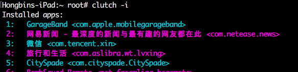
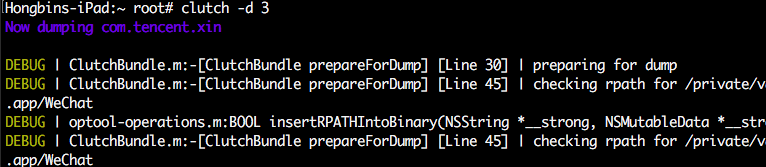
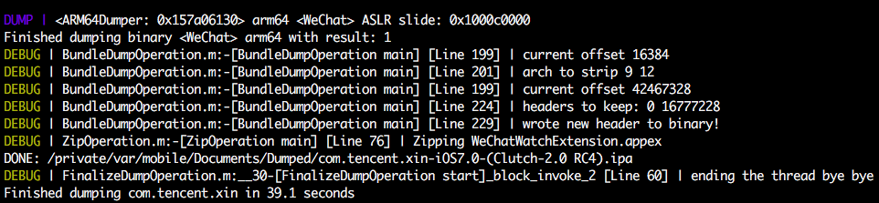
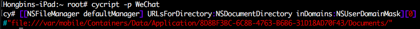
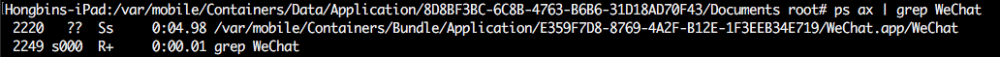
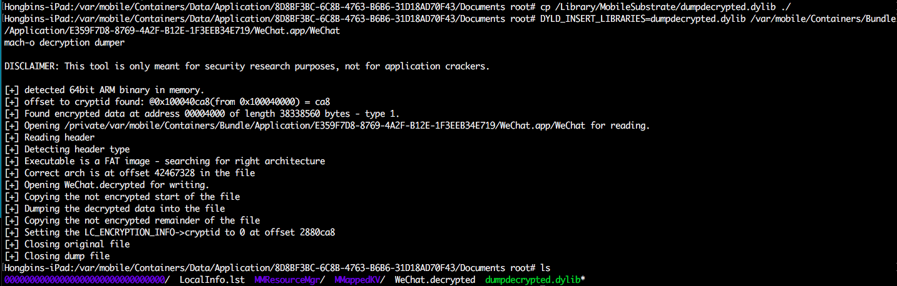
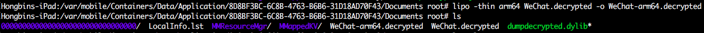
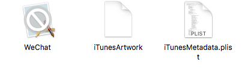
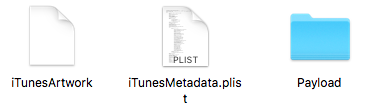

工具
Clutch https://github.com/KJCracks/Clutch
dumpdecrypted https://github.com/stefanesser/dumpdecrypted
说明
dumpdecrypted需要手动解密可执行文件，并对解密结果进行瘦身，再拷贝资源文件构建ipa包。
Clutch支持解密可执行文件或ipa，使用起来比较简单(一条龙服务，完成了1中的所有步骤)。
完全手动解密的做法在《iOS应用安全攻防实战》中的“加密的二进制文件”有详细介绍。
原理
将应用程序运行（系统在此前会解密程序），将内存中的代码转存为另外一个可执行文件。
注意
通过dumpdecrypted得到的可执行文件其实不是完全解密过的，机器是arm64的话就只能解密arm64那部分。
通过命令
lipo -thin arm64 .decrypted -o -arm64.decrypted可获得纯净的可执行文件。
实践
Clutch
查看应用列表
命令: Clutch -i
dump应用
命令: Clutch -d <应用编号>

- dumping~~成功后可在/private/var/mobile/Documents/Dumped/目录下看到dump的ipa包.

dumpdecrypted
- 利用Cycript找到程序Documents文件夹
命令: cycript -p 二进制文件名(通过px ax得到)
[[NSFileManager defaultManager] URLsForDirectory:NSDocumentDirectory inDomains:NSUserDomainMask][0]
 进入Documents文件夹，准备dump

对dump结果进行净化
拷贝应用程序文件夹 如上中的/var/mobile/Containers/Bundle/Application/E359F7D8-8769-4A2F-B12E-1F3EEB34E719/文件夹， 得到
将dump得到的WeChat-arm64.decrypted重命名为WeChat 替换WeChat.app里的WeChat 建立Payload文件夹 放进WeChat.app 得到目录
执行命令zip -qry WeChat.ipa Payload/WeChat.app得到ipa包 放到越狱机器上安装(ipainstaller) 什么？！安装失败？！查看log 嗯～签名验证失败。别担心，面包会有的。